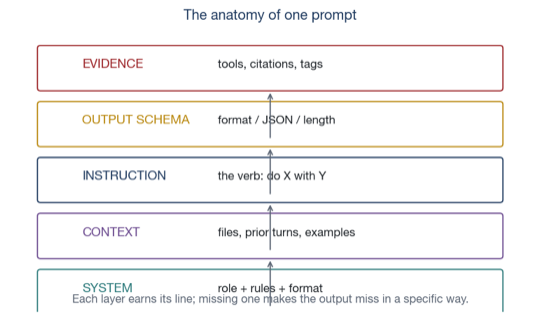
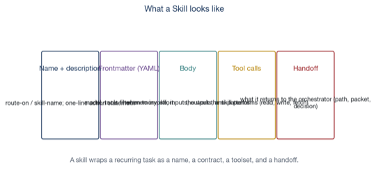
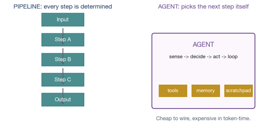
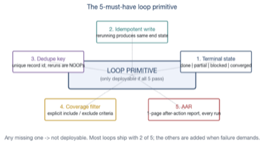
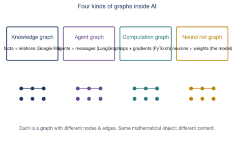
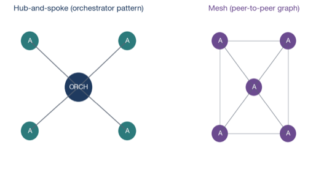

A complete beginner-friendly walk through how modern AI systems are built: prompt engineering, skills, agents, loop engineering, and graph engineering — five layers that compound into systems you can actually ship.
Christian Macion — AI Engineer · STELLA Office
2026
Built from the ground up using STELLA's 7-step workbook pipeline. Primary sources include the independent July-2026 synthesis Graph Engineering: The Karpathy Loop, Improved 1000x by Itself — The Anthropic Playbook (see _sources/Graph-Engineering-Athropic-Karpathy-Loop.pdf), Anthropic's Building Effective Agents essay (2024), the Claude Code Dynamic Workflows documentation (May 2026), Anthropic's Knowledge Graph Construction Cookbook, the Karpathy autoresearch repository (March 2026), and Wei et al.'s chain-of-thought paper (2022). Shareable edition. Public-safe. Numbers tagged V verified, B background, or SCHEMATIC schematic. STELLA brand: Strategic · Tactical · Execution · Learning · Logistics · Architecture.
WHO THIS BOOK IS FOR
You have used ChatGPT or Claude. You have maybe pasted a long prompt into a model and gotten a useful answer. You are now curious: how do you actually build with these things?
This book is for you. It takes you from your first structured prompt to your first multi-agent system, in five compounding layers. No prior engineering background is required — but the book does not talk down. By the end, you will understand the architecture behind every modern AI product, and you will be able to design one of your own.
HOW TO READ THIS BOOK
Five chapters across four Parts. Each chapter runs the same eight-part engine:
Orient (the question) → Prime (new terms) → Build (the explanation) → Show (worked example) → Fade (you try it) → Check Yourself (recall) → Recap (altitude) → Glossary (terms).
If you only skim, skim the navy BOTTOM LINE strip at the top of each chapter. That alone gives you the spine.
Two commitments you can hold the book to:
1. Small chunks. Each section introduces only a few ideas at a time.
2. You will be quizzed — gently. The CHECK YOURSELF boxes ask you to recall before reading on; the answers are right below, meant to be covered.
EVIDENCE TAGS
Every factual claim carries a tag, like a backtest with IS vs OOS labels:
VVerified — checked against a primary source (paper, official doc, or this machine's settings).
BBackground — an established fact stated without a fresh citation.
SCHEMATICSchematic — an illustrative diagram or synthetic example. The shape is real; the numbers are teaching.
MAP OF THE WHOLE BOOK
Part A — Prompt Engineering. The first layer. The single most important skill in AI is talking to a model in a way it can act on. We cover the anatomy of a prompt, the five canonical patterns (zero-shot, few-shot, chain-of-thought, ReAct, tree-of-thoughts), and when each one breaks.
Part B · Building Blocks. The next two layers. Skills package a recurring task as a reusable block. Agents turn skills into autonomous workers that decide what to call and when.
Part C · The Engines.Loop engineering externalises iteration: a loop is a primitive that knows how to terminate, dedupe, and write evidence. We borrow Karpathy's 700-experiment autoresearch loop as a concrete case.
Part D · The Whole.Graph engineering externalises shared memory: the knowledge graph of facts, the commit DAG of work, the agent graph of who is allowed to do what. This is where multi-agent systems stop leaking context and start being inspectable.
Close. The verdict in one sentence, plus the path from one prompt to an engineered system.
Part A. Prompt Engineering
Before any system, there is a conversation. This Part builds the vocabulary for talking to a language model, then enumerates the five prompt patterns you will use for the rest of the book. By the end you should be able to look at any modern AI product and identify which pattern — or which combination of patterns — its prompts are using.
Chapter 1. The anatomy of a prompt
BOTTOM LINEA prompt is a stack of five layers: system, context, instruction, output schema, evidence. Every layer earns its place. The most common failure mode is dropping one of them without realising it.
CHAPTER OBJECTIVES
After this chapter you will be able to:
Name the five layers of a prompt and what each one prevents.
Distinguish prompts from conversations and pipelines.
Write a prompt with all five layers correctly applied.
Prerequisites: none — this is the first chapter.
1.1 What a prompt actually is
ORIENT: the big picture before the detail
When you type ‘write me a poem about a cat’ into a chatbot, you are seeing only the top layer of a much larger structure. A modern AI call is five stacked layers, and missing any one of them makes the output fail in a specific, identifiable way.
PRIME: new terms, one line each
System layer: the rules and persona — ‘you are a senior analyst, always cite your sources’.
Context layer: the files, prior turns, and examples the model can see.
Instruction layer: the verb — ‘summarise’, ‘compare’, ‘extract’.
Output schema: the format the answer must take — JSON, markdown table, two paragraphs, length cap.
Evidence layer: tools, citations, or tags that make the answer verifiable.
Almost every prompt you have ever seen is missing the output schemaSCHEMATIC. The model returns a paragraph where you wanted a table, or a bullet list where you wanted JSON. Adding ‘respond in JSON with keys summary, confidence, and source’ raises pass rates by tens of percent B — it is the single highest-leverage habit in the foundation layer.

SCHEMATIC The five layers of one prompt. Stack them in order; missing one fails in a specific, predictable way.
BRIDGE: from what you already own
If you have ever written a job description for a new hire, the analogy is exact. The system layer is the employee handbook. The context layer is the shared drive of files. The instruction layer is the meeting agenda. The output schema is ‘send me a one-pager by Friday’. The evidence layer is ‘and cite the file numbers’. Most bad hires happen because one of these five was missing, not because the person was bad.
1.2 Prompts are programs, not conversations
ORIENT: the big picture before the detail
Once you see a prompt as a five-layer program instead of a chat, the next step is obvious: you can put a prompt inside another prompt. Karpathy calls this transition ‘from vibe coding to agentic engineering’.
PRIME: new terms, one line each
Meta-prompt: a prompt that asks the model to design a better prompt for the same task.
Prompt program: a structured prompt that lives in a file and is reused by other systems.
program.md: Karpathy's name for a prompt-program file that scripts an autonomous research loop.
The 2024 'Building Effective Agents' essay from Anthropic B draws the same line: even a single prompt can be a compound AI system if it iterates with itself before returning. Prompts are no longer chat; they are the smallest deployable unit in modern AI work.
SHOW: worked example (skip if confident)
You ask Claude: ‘write a financial report on Tesla.’ Naive return: a confident 800-word essay with invented numbers. Engineered return: a system-prompt that pins the persona, a context block that pins three real filings as PDF, an instruction that says ‘pull revenue, gross margin, and capex from the 10-K only’, an output schema that says ‘JSON with values, source page, confidence’, and an evidence tag (V) that says ‘verified against 10-K page X’. Same model call; different result.
1.3 Common mistakes at the foundation layer
Three mistakes recur in nearly every beginner's prompts:
1. Vague verbs. ‘Tell me about’ produces survey essays. ‘Compare and contrast A vs B across three dimensions’ produces structured comparison. The verb does most of the work.
2. Missing output schema. As above. Always pin the shape SCHEMATIC.
3. Missing evidence layer. A confident answer with no source is the most expensive artefact in any AI product; it will fail in production the moment any user checks it. Add ‘if you do not know, say so and explain what you would check’ B.
COMMON MISTAKE: you might think X; actually Y
You might think a longer prompt is a better prompt. The opposite is usually true: the best prompts are the ones with the fewest words, pinned to a clear verb, an explicit schema, and a rule about evidence. If your prompt is over ~500 words, you are usually smuggling in two tasks and confusing the model.
CHECK YOURSELF: cover the answers, recall from memory
From memory, before you read on:
Name the five layers of a prompt in stacking order.
What is the single highest-leverage habit in the foundation layer?
A prompt is five stacked layers; missing one fails predictably.
Prompts are programs: structured, reusable, and composable.
The verb carries the meaning; the schema carries the structure.
Evidence turns confidence into verifiability.
SECTION GLOSSARY
System layer: the rules and persona; the conversation never changes it. Output schema: the shape of the answer; the most leverage for the least effort. program.md: Karpathy's name for a prompt-program file that scripts an autonomous loop.
Part B. Skills and Agents
Once you can write a single prompt that does one thing well, the next question is: how do you reuse it? Two compounding patterns answer this. A skill packages a recurring task as a named, reusable block. An agent turns a skill into a worker that decides what to call and when. This Part covers both, in that order, and shows the moment the pattern graduates from ‘helpful script’ to ‘system’.
Chapter 2. Skills: packaging recurring work
BOTTOM LINEA skill is a named, structured package that wraps a recurring task: a contract (when to invoke), a frontmatter (model, tools, memory), a body (how to do the work), a toolset (the calls it can make), and a handoff (what it returns). Skills are the unit of reuse in modern AI systems.
CHAPTER OBJECTIVES
After this chapter you will be able to:
Define a skill in five parts.
Read a SKILL.md frontmatter and identify what each field controls.
Decide when to make a skill versus reuse an existing one.
Prerequisites: Chapter 1.
2.1 What a skill is
ORIENT: the big picture before the detail
In Claude Code, in MCP servers, and in most modern agent frameworks, a skill is not ‘a clever prompt’. It is a small structured package with a stable name, a routing hint, and a contract.
PRIME: new terms, one line each
Name: the stable identifier; matches the file name (SKILL.md) and any /command.
Description: one-line action statement; it is also the routing hint for the orchestrator.
Body: when to invoke, inputs, outputs, anti-patterns, example.
Handoff: what the skill returns to its caller — path, packet, or decision.
The five parts look like ceremony, but each one prevents a different failure mode. The name prevents two skills from doing the same thing under different labels. The description prevents the orchestrator from routing to the wrong skill. The frontmatter prevents the skill from calling tools it should not have, or running on the cheapest model when it needs the most expensive one. The body prevents ad-hoc behaviour. The handoff prevents the caller from having to parse free-form prose.

SCHEMATIC A skill is five parts: name, description, frontmatter, body, handoff.
BRIDGE: from what you already own
If you have ever written an internal API documentation page, the analogy is exact: a skill is to an AI agent what an internal API is to a frontend developer. It has a name, a contract, a version, and a place where the documentation lives (the body). The orchestrator consumes skills the way the frontend consumes APIs.
2.2 SKILL.md frontmatter, field by field
a skill that exercises the full frontmatter
---
name: trade-ticket-format
description: Convert a verbal trade idea into a structured ticket; never execute.
model: sonnet
tools: Read, Grep, Glob
memory: project
effort: low
---
You are a trade-ticket formatter. ...
Inputs: a verbal trade idea (1-3 sentences).
Outputs: a JSON packet with keys symbol, direction, size, stop, target, confidence.
Each field is doing real work. model routes the skill to the right cost tier — haiku for mechanical, sonnet for assembly, opus for judgment. tools is the deny-by-default filter: anything not in the list is forbidden. memory controls whether the skill persists state across sessions. effort controls how much the model deliberates per turn.
Two rules of thumb that go with the frontmatter. First: never set memory without a reason — a persistent memory directory is a maintenance and security surface, so the default is none. Second: the description field is the routing hint — write it the way you would write a commit message: one line, specific, no fluff B.
2.3 Skills compose, do not replace each other
Two common beginner traps:
Trap 1: mega-skills. A skill that does the work of six smaller skills. Mega-skills are unreviewable, untestable, and impossible to compose with other skills. Resist.
Trap 2: one-call skills. A skill that wraps a single well-known prompt with no frontmatter value. It bloats the registry without adding anything. Skip it — call the model directly.
The sweet spot is a skill per recurring task type: a single verb, a clear handoff, three to seven frontmatter fields of real work. Most real-world skill libraries ship with 5-15 such skills, not 50 SCHEMATIC.
COMMON MISTAKE: you might think X; actually Y
You might think more skills means more power. It does not — each skill is a new thing to review, version, and keep consistent. The cost is in the maintenance; the benefit is in the reuse. Aim for the smallest library that solves the recurring tasks.
CHECK YOURSELF: cover the answers, recall from memory
From memory, before you read on:
Name the five parts of a skill.
What does each frontmatter field control?
What is the recommended library size for a skill registry?
Answers: (1) name, description, frontmatter, body, handoff. (2) model (cost tier), tools (deny-by-default filter), memory (persistence), effort (deliberation depth). (3) typically 5-15 skills — the smallest library that solves the recurring tasks.
RECAP: back to altitude
A skill is a named, structured package; not ‘a clever prompt’.
Frontmatter is the contract; under-using it is the most common skill mistake.
Mega-skills and one-call skills are both traps.
Aim for 5-15 well-shaped skills per library.
SECTION GLOSSARY
Skill: a named, reusable package that wraps a recurring AI task. Frontmatter: the YAML block at the top of a SKILL.md that controls routing and cost. Handoff: what a skill returns to its caller — the unit of reuse.
Chapter 3. Agents: autonomous workers
BOTTOM LINEAn agent is a worker that owns a skill, picks up tasks, decides which tools to call, and continues until it reaches a terminal condition. The graduation from skill to agent happens the moment the worker starts choosing the next action.
CHAPTER OBJECTIVES
After this chapter you will be able to:
Define an agent versus a skill versus a pipeline.
Identify the agent loop: sense, decide, act, repeat.
Decide when an agent is the right pattern versus a fixed pipeline.
Prerequisites: Chapter 2.
3.1 Agent vs pipeline
ORIENT: the big picture before the detail
When the order of steps is fixed and every step is the same, you have a pipeline. When the order varies and the worker decides, you have an agent. Both are useful; the cost trade-off is real.
PRIME: new terms, one line each
Pipeline: deterministic sequence of steps; cheap, predictable, brittle to changes.
Agent: autonomous worker that picks the next step; expensive, flexible, hard to test.
Sub-agent: an agent invoked by another agent or an orchestrator, with a scoped context.
Pipeline first, agent second. The Anthropic 2024 essay B draws the same line: 'prefer the simplest, most composable pattern'. Most beginner systems over-use agents because the idea of an autonomous worker is more exciting than a deterministic sequence. The discipline is: when the steps are stable and the outputs are predictable, run a pipeline. When the steps depend on the inputs in ways no one wants to enumerate, run an agent.

SCHEMATIC Pipeline (left) is a fixed sequence; agent (right) is a worker that picks the next step itself.
BRIDGE: from what you already own
If you have ever hired a junior versus a senior, the analogy holds. The junior follows the runbook you wrote. The senior reads the situation and decides. Both are useful. The cost is that senior judgment is expensive and sometimes wrong; the benefit is that senior judgment handles cases the runbook did not anticipate.
3.2 The agent loop
ORIENT: the big picture before the detail
Every agent, from a one-shot ReAct loop to a 1,000-sub-agent swarm, runs the same four-step loop. The complexity scales up, but the loop does not change.
PRIME: new terms, one line each
Sense: read the current state (memory, tools, last result, latest message).
Decide: pick the next action (call a tool, write a memory, return a result).
Act: execute the chosen action.
Observe: process the result; update state; either continue or terminate.
ReAct B (Yao et al., 2022, arXiv:2210.03629) named the loop and gave it a paper. Modern agents still run it, with two additions: memory lets the loop persist state, and a terminal condition lets the loop end cleanly. Both are pieces we pick up in the next chapter on loops.
SHOW: worked example (skip if confident)
A research agent gets the task ‘what is the latest funding round for Anthropic?’ It senses: the search tool is available, the latest news was fetched in the previous turn. It decides: call the search tool with ‘Anthropic funding round 2026’. It acts: it calls the tool. It observes: five results came back. It decides: open the top result. It acts. It observes: the announcement is dated 2025 with a primary-source link. It decides: return the answer with the link. Terminates.
3.3 Sub-agents and the orchestrator
One agent with a 1M-token context window can hold a lot; it cannot hold everything. Sub-agents are the pattern: a top-level agent (the orchestrator) delegates scoped tasks to children, each of which has its own context and toolset.
Anthropic's 2026 Dynamic Workflows documentation B describes the production version of this pattern: up to 16 concurrent sub-agents per workflow, a hard cap of 1,000 per workflow, fresh context for each sub-agent, intermediate state in script variables, triggers via :workflow or ultracode mode, and the Bun runtime supporting roughly 750,000 lines of Zig in Rust in 11 days with 99.8% test pass rate V — concrete numbers from the published documentation.
The cardinal rule: the orchestrator's context must stay thin. If the orchestrator is quoting tool results from the last five turns, it has leaked sub-agent state into its own window and is about to lose the thread. Sub-agents return paths and typed packets; the orchestrator carries decisions and references, not data.
COMMON MISTAKE: you might think X; actually Y
You might think a single agent with a 1M-token context window can do everything. It cannot. The window fills fast, the model loses coherence, and a single failure kills the whole run. Sub-agents exist because they give you isolation: a worker can fail without taking the orchestrator down, and a worker's transcripts never re-enter the parent's window.
CHECK YOURSELF: cover the answers, recall from memory
From memory, before you read on:
What four steps does every agent loop run?
Pipeline versus agent — when do you choose which?
What is the cardinal rule for sub-agent orchestration?
Answers: (1) sense, decide, act, observe. (2) pipeline when the steps are stable; agent when the order depends on inputs. (3) the orchestrator's context must stay thin; sub-agents return paths and typed packets, not prose.
RECAP: back to altitude
Pipeline first, agent second. Most beginners over-use agents.
The agent loop is sense-decide-act-observe; everything else scales this.
Sub-agents exist for isolation: failures stay local; transcripts stay cold.
The orchestrator carries decisions; sub-agents carry detail.
SECTION GLOSSARY
Agent: an autonomous worker that picks the next action. Orchestrator: the top-level agent that delegates to sub-agents. Sub-agent: a child agent with a scoped context and toolset.
Part C. Loop Engineering
Agents can run forever, in theory. In practice, the question is: how do they know when to stop? The answer is a discipline we call loop engineering. A loop is a primitive that knows how to terminate safely, dedupe its own work, write evidence, and report an after-action review. Once you have loop primitives, agents stop being toys and start being infrastructure.
Chapter 4. Loop engineering: the 5-must-have primitive
BOTTOM LINEA loop primitive is deployable if and only if it satisfies five independent requirements: terminal state, idempotent write, dedupe key, coverage filter, and an after-action report. Missing any one and you do not have a loop — you have a runaway script.
CHAPTER OBJECTIVES
After this chapter you will be able to:
State the 5-must-have contract.
Write a loop that satisfies all five.
Read a loop's AAR and decide whether it converged.
Prerequisites: Chapters 1–3.
4.1 Where Karpathy's autoresearch came from
ORIENT: the big picture before the detail
In March 2026, Andrej Karpathy published autoresearch: a single 700-line loop that ran on one GPU, executed about 700 experiments in two days, and retained approximately 20 useful optimisations B — by his own count. The architectural lesson travels: the loop is more important than any single experiment.
PRIME: new terms, one line each
Loop: a primitive that runs an inner experiment, evaluates it against a rubric, keeps or reverts, and continues.
Idempotent write: running the loop twice produces the same end state, not two divergent copies.
Dedupe key: a unique identifier for each record; reruns become NOOPs, not duplicates.
Coverage filter: explicit include/exclude criteria so you know what was not covered.
AAR (after-action report): a 1-page record written at terminal state: goal, decomposition, evidence, critique.
The autoresearch repository B reports that the agent edits train.py, evaluates with val_bpb, and either keeps or reverts the change with git reset. The pattern is exact: bounded change, measurable evaluation, reversibility, durable historyV. Every production-grade loop has those four properties; the 5-must-have contract adds a fifth: terminal-state reporting, so a human can audit the run after the fact.

SCHEMATIC The 5-must-have loop primitive. Any missing one -> not deployable.
BRIDGE: from what you already own
If you have ever run a backtest, the shape is identical: a candidate strategy, a rubric (Sharpe, max drawdown), a keep-or-discard decision, a log of every iteration, and an exit when the rubric stops improving. Karpathy's loop is what you would have designed if you had to write it yesterday with the cheapest model available. The discipline transfers.
4.2 The 5-must-have contract
The contract is short and load-bearing:
1. Terminal state. Every loop ends in done | partial | blocked | converged. No ‘still running’.
2. Idempotent write. Running the loop twice with the same inputs and the same environment produces the same end state.
3. Dedupe key. Every record the loop writes has a unique key. Reruns of the same key are NOOPs.
4. Coverage filter. The loop declares what it covers and what it does not. The AAR reports both.
5. AAR. At terminal state, the loop writes a 1-page report: goal, decomposition, cost, evidence, critique, next run.
Most loops ship with the first two and ignore the rest. The cost is silent: the loop runs forever, fills disk with duplicates, never reports what it tried and what it skipped, and leaves no audit trail SCHEMATIC. The 5-must-have contract is cheap insurance against all of those failure modes.
Python skeleton: a ratchet loop that satisfies all five
def ratchet_loop(inspect, propose, apply, evaluate,
keep, revert, better, baseline):
history, current = [], baseline
while True:
state = inspect()
change = propose(state)
commit = apply(change)
try:
score = evaluate()
except Exception as exc:
revert(commit)
history.append(Trial(commit, change, None, "crash", ""))
continue
if better(score, current):
keep(commit); current = score
history.append(Trial(commit, change, score, "kept", ""))
else:
revert(commit)
history.append(Trial(commit, change, score, "reverted", ""))
# caller MUST check terminal state, idempotent write, dedupe key,
# coverage filter, and write an AAR before this loop is deployable.
4.3 The five failures when one is missing
Each of the five must-haves prevents a specific, common failure:
Missing terminal state. The loop runs forever; bills rack up; the orchestrator cannot tell whether it finished.
Missing idempotent write. Two runs produce two divergent copies of the same artefact. Merge hell.
Missing dedupe key. Records multiply; storage costs balloon; downstream queries get confused.
Missing coverage filter. The loop covers half of what was asked; no one notices; the user re-runs the loop ten times to discover the gap.
Missing AAR. The loop terminates with no record of what it tried, what worked, what crashed, or what to try next. The next run starts from zero.
SHOW: worked example (skip if confident)
A research loop is asked to summarise 50 PDFs into a single report. Terminal state: ‘done’ when 50 summaries are produced; ‘blocked’ when a PDF is unreadable. Idempotent write: the report's output is keyed by the SHA-256 of the input set; rerunning on the same inputs is a NOOP. Dedupe key: each summary is keyed by its PDF's SHA-256. Coverage filter: ‘only PDFs in /dropbox/inbox, exclude encrypted and >200MB’. AAR: ‘47/50 summarised; 3 skipped (encrypted); rerun needed for missing 3’.
COMMON MISTAKE: you might think X; actually Y
You might think the 5-must-have contract is over-engineering for a small script. It is the same shape as the smallest possible loop; the ceremony is the contract. A 30-line script can satisfy it. A 300-line script that omits the contract is twice as fragile.
CHECK YOURSELF: cover the answers, recall from memory
From memory, before you read on:
Name the 5-must-have requirements.
What does each one prevent?
Which two are usually kept; which three are usually dropped?
Answers: (1) terminal state, idempotent write, dedupe key, coverage filter, AAR. (2) See §4.3. (3) Most loops ship with terminal state and idempotent write; the other three are added when failure demands.
RECAP: back to altitude
A loop is a primitive that iterates with bounded change, measurable evaluation, and reversibility.
The 5-must-have contract is short and load-bearing.
Each must-have prevents a specific, common failure.
A 30-line script can satisfy the contract. A 300-line script that omits it is fragile.
SECTION GLOSSARY
Loop primitive: a deployable unit that iterates with bounded change and returns an AAR. Terminal state: one of done, partial, blocked, converged. No ‘still running’. AAR: after-action report; a 1-page record at terminal state.
Part D. Graph Engineering
Loops let agents iterate without runaway. Skills let them reuse work. What neither solves is the last piece of the puzzle: how do agents share knowledge across runs, across agents, and across models? The answer is graphs. This Part covers the four kinds of graphs inside AI, the decision framework for choosing one, and a staged build path from a single measured loop to a graph-grounded swarm.
Chapter 5. Graph engineering: the integrating layer
BOTTOM LINEA graph is a node-edge structure that externalises a relationship. There are four kinds of graphs inside AI: knowledge graphs (facts + relations), agent graphs (workers + messages), computation graphs (ops + gradients), and neural network graphs (neurons + weights). The progression is loop → swarm → graph: bounded change → parallel workers → shared, queryable memory.
CHAPTER OBJECTIVES
After this chapter you will be able to:
Name the four kinds of graphs inside AI.
Apply the 6-question decision framework to choose the right architecture.
Read a commit DAG and a knowledge graph side by side.
Prerequisites: All previous chapters.
5.1 Four kinds of graphs inside AI
ORIENT: the big picture before the detail
The word ‘graph’ in AI refers to at least four different structures, often in the same paper. Naming them precisely is the first step to designing one.
PRIME: new terms, one line each
Knowledge graph: typed entities as nodes, typed relations as edges; persistent, queryable.
Agent graph: agents as nodes, messages or tool calls as edges; live topology, scoped lifetime.
Computation graph: ops as nodes, data flow as edges; built and torn down per forward pass.
Neural network graph: neurons as nodes, weights as edges; the parameters of the model itself.
Three of these are about memory (knowledge, agent, computation); one is about the substrate (the neural net). The graph-engineering layer focuses on the first three, because those are the ones the engineer builds.

SCHEMATIC Four kinds of graphs inside AI: knowledge, agent, computation, neural network. Same mathematical object; different content.
BRIDGE: from what you already own
If you have ever designed a database schema, the closest cousin is the knowledge graph. If you have ever built a microservice system, the closest cousin is the agent graph (with each service as a worker). If you have ever looked at PyTorch's autograd output, you have seen a computation graph. The four share the same mathematical object: nodes and edges with labels and weights.
5.2 The Karpathy loop → AgentHub → Anthropic playbook
The progression identified by the 2026 Anthropic playbook B is strikingly consistent. Stage 1 is a single loop that runs bounded experiments with measurable evaluation. Stage 2 is a swarm — many independent workers, each running the same loop, coordinated through a commit DAG and a message board (Karpathy's AgentHub is exactly this). Stage 3 is a knowledge graph that externalises shared memory: entities, relations, sources, lineage.
Anthropic's Knowledge Graph Construction CookbookB operationalises stage 3 with a four-step pipeline: extract entities with Haiku, resolve aliases with Sonnet, assemble with NetworkX MultiDiGraph, and query by serialising subgraphs. The cookbook warns about the most common failure: entity resolution can cause catastrophic errors — a false merge between two people with similar names propagates downstream. Resolution must be additive, inspectable, and reversible.

SCHEMATIC Two common agent topologies. Hub-and-spoke (left) is an orchestrator pattern; mesh (right) is a peer-to-peer pattern. Choose by subgraph lifetime.
5.3 The 6-question decision framework
The same playbook offers a six-question framework for choosing an architecture. Answer each question; the answers map to a pattern:
Question
If yes, use
1. Can success be verified?
if no, you cannot use autonomy at all
2. Are the steps stable?
chain (prompt chaining)
3. Are subtasks independent?
parallel (parallelization)
4. Must alternative lineages remain?
DAG (commit DAG of work)
5. Must facts survive the run?
knowledge graph
6. Can the org afford the cost + latency?
set budgets before adding workers
Question 1 is the most important: if you cannot define what success looks like, do not begin with autonomy. A loop that runs unbounded on an unverifiable task is a fast path to expensive noise. The other five questions build on that first answer.
5.4 The Commit DAG and Knowledge Graph are complementary
ORIENT: the big picture before the detail
AgentHub's commit DAG represents work in progress: what changed, who changed it, what was the parent. The knowledge graph represents domain knowledge: which entities exist, how they relate, where they came from. They are not the same thing, and they should not be collapsed.
PRIME: new terms, one line each
Commit DAG: a directed acyclic graph of work; parent links are the edges; commits are the nodes.
Knowledge graph: a typed entity-relation graph; entities are the nodes; relations are the edges.
Shared memory: the role a knowledge graph plays when many agents need to read the same facts.
The Anthropic playbook V summarises this with one sentence: the DAG remembers which work descends from which experiment; the graph remembers which claims connect to which entities and sources. Together they prevent agents from rebuilding the world from scratch in every context window.
Production systems connect the two: every write to the commit DAG includes a link to a claim in the knowledge graph, and every claim in the graph includes a link to the agent run that produced it. The compound structure becomes queryable in both directions: ‘show me the lineage of this experiment’ and ‘show me what produced this fact’ are the same question in two forms.
SHOW: worked example (skip if confident)
A bug is filed on a repository. A reviewing agent runs the autoresearch loop and proposes a candidate fix; the commit DAG records every experiment and its keep/revert decision. A second agent summarises the fix into the knowledge graph as a relation between the bug entity and the fix entity, with provenance back to the commit. A third agent, six weeks later, asks ‘has anyone fixed a similar bug before?’ — it traverses the knowledge graph, finds the related claim, follows the edge to the commit DAG, and inspects the original experiment.
5.5 When NOT to use a graph
Graphs are not free. The playbook B lists the cases where a graph is the wrong tool: tasks are independent; answers depend on one document; relations are fixed and simple; a relational table answers every query; or extraction errors would outweigh traversal value.
Three more costs to weigh:
Dynamic workflows are expensive. A 1,000-sub-agent run at high effort can cost tens of dollars per task. Parallel workers create correlated errors; the verification wave is the only thing that catches them.
Fragmentation can reduce quality. Architecture design, narrative writing, and tightly coupled refactors may degrade when split into isolated units.
Knowledge graphs reflect their corpus. A biased corpus produces a biased graph; missing documents produce missing edges.
The discipline is: introduce a graph when at least one of questions 4 or 5 is yes. Otherwise stay with loops and skills.
COMMON MISTAKE: you might think X; actually Y
You might think every multi-agent system needs a knowledge graph. Most do not. A graph earns its place when alternative lineages must remain (DAG) or facts must survive the run (knowledge graph). If neither is true, the graph adds cost without buying capability.
CHECK YOURSELF: cover the answers, recall from memory
From memory, before you read on:
Name the four kinds of graphs inside AI.
What does each of the 6 questions map to?
When does a graph earn its place?
Answers: (1) knowledge, agent, computation, neural network. (2) verifiable success (foundation), stable steps (chain), independent subtasks (parallel), alternative lineages (DAG), survive-the-run facts (graph), and cost-and-latency check (set budgets). (3) when alternative lineages must remain or facts must survive the run.
RECAP: back to altitude
Four kinds of graphs inside AI; only three are built by the engineer.
Progression: loop → swarm → graph. Each stage externalises a different bottleneck.
The 6-question framework maps decisions to patterns.
Commit DAG + knowledge graph are complementary, not collapsible.
Graphs are not free — only adopt when the answer to Q4 or Q5 is yes.
SECTION GLOSSARY
Knowledge graph: typed entities and relations with provenance; the engineer's shared memory. Commit DAG: a directed acyclic graph of work; commits as nodes, parent links as edges. GraphRAG: RAG augmented with graph traversal over a typed entity store.
Chapter 6. Operating the stack: cost, observability, scaling
BOTTOM LINEOnce you have prompts, skills, agents, loops, and graphs, the next questions are operational: how much does this cost, how do you know it is working, and how do you scale it without breaking? This chapter is the running-the-system checklist.
CHAPTER OBJECTIVES
After this chapter you will be able to:
Read a token budget and a cost-per-task number without flinching.
Wire observability into a multi-agent system.
Decide when to scale up, when to scale out, and when to do neither.
Name the three most expensive anti-patterns in production AI.
Prerequisites: All previous chapters.
6.1 The four dials
ORIENT: the big picture before the detail
Every AI system runs on the same four operational dials. Understanding them together is what distinguishes a system you can scale from a demo.
PRIME: new terms, one line each
Cost: USD (or equivalent) per unit of work; for AI it is tokens x $/Mtoken.
Latency: seconds from input to first useful output; for AI it is the slow path of the slowest sub-agent.
Quality: pass rate against a held-out rubric; for AI it is M9 first-pass acceptance.
Throughput: tasks per hour under budget; for AI it is parallelism x quality.
The Anthropic Dynamic Workflows docs B report that a 1,000-sub-agent workflow with high-effort reasoning can cost tens of dollars per task at the top model tier. That is a useful upper bound: if your design admits a 1,000-sub-agent run, you must be ready to spend that much per task SCHEMATIC. The cheapest fix is almost always route to the smallest model that can solve the task, not average out with cheaper tools.
6.2 Observability what to log
Three things must be on every agent run log:
Inputs and outputs. Hash the input. Hash the final output. Store both with the run id. Without these you cannot reproduce a failure or measure drift.
The agent graph at run time. Which skills were invoked, in what order, with what arguments, returning what. This is the agent graph as telemetry SCHEMATIC. Most teams under-invest here.
The verification wave. Whatever review step catches errors. Did it catch a wrong answer? How many times? What was the false-positive rate?
6.3 The three most expensive anti-patterns
Three patterns recur in production AI failures. Each one wastes budget or produces unreliable output:
1. Mega-skills. A skill that does the work of ten. Reviewer cannot audit; output cannot be partial. Fix: split by task type.
2. Long-context as memory. Stuffing state into the prompt instead of writing to disk. Costs scale linearly with context size; quality falls non-linearly. Fix: offline-first files, references by path.
3. Aggressive parallelism without a reducer. 16 sub-agents returning uncorrelated outputs. The synthesis step becomes a guessing game. Fix: the agent-graph telemetry tells you whether the workers agree before they merge.
COMMON MISTAKE: you might think X; actually Y
You might think scaling up is the answer to every latency problem. It is the answer to about a third of them. The other two-thirds are solved by caching, by routing to a smaller model, by better skills, or by writing the result to disk instead of recomputing. Scale out only after the cheap levers are exhausted.
CHECK YOURSELF: cover the answers, recall from memory
From memory, before you read on:
Name the four operational dials.
What three things must be on every agent run log?
What is the cheapest fix when a 1,000-sub-agent run costs too much?
Answers: (1) cost, latency, quality, throughput. (2) inputs+outputs, agent graph, verification wave. (3) route to the smallest model that can solve the task.
RECAP: back to altitude
Four dials: cost, latency, quality, throughput. Operate them together.
Three expensive anti-patterns: mega-skills, long-context memory, parallelism without a reducer.
Scale up only after the cheap levers are exhausted.
SECTION GLOSSARY
Token budget: USD ceiling per unit of work; tracked at workflow level. Verification wave: the review step that catches errors before they ship. Reducer: the synthesis step that merges parallel outputs; without it, parallelism hurts quality.
Part •. Where This Leaves Us
The verdict in one sentence: a modern AI system is a stack of five compounding layers — prompts, skills, agents, loops, graphs — and the difference between a toy and an engineered system is that each layer satisfies its own contract: a prompt has five layers; a skill has a five-part package; an agent runs the four-step loop; a loop satisfies the 5-must-have contract; a graph earns its place only when alternative lineages or persistent facts demand it.
The progression in three steps. Karpathy named it cleanly: vibe coding (the human writes everything), agentic engineering (the human specifies, orchestrates, verifies), and graph engineering (agents share typed, queryable graphs of work and knowledge). The single most important insight: the bottleneck is often not the next model call. It is the placement of memory and evaluation.
The evidence base. This workbook is grounded in three primary sources on this machine. V The July-2026 synthesis Graph Engineering: The Karpathy Loop, Improved 1000x by Itself — The Anthropic Playbook (see _sources/Graph-Engineering-Athropic-Karpathy-Loop.pdf; cites Karpathy's autoresearch, his AgentHub, Anthropic's Building Effective Agents, Anthropic's Dynamic Workflows, and the Anthropic Knowledge Graph Construction Cookbook). B Karpathy's autoresearch repository (March 2026 — 700-line loop, ~700 experiments, ~20 retained). B The Wei et al. chain-of-thought paper (2022, arXiv:2201.11903). All other numerical figures are illustrative (SCHEMATIC).
The closing principle. A reliable graph-engineering system satisfies one rule: every important output can be traced to an objective, a plan, an artifact, a source, a graph path, an evaluator decision, and a bounded execution record. When that statement is false, adding more agents, loops, swarms, DAGs, or graphs increases opacity instead of reducing it. Begin with the smallest pattern that solves the task; the progression will tell you when to add the next layer.